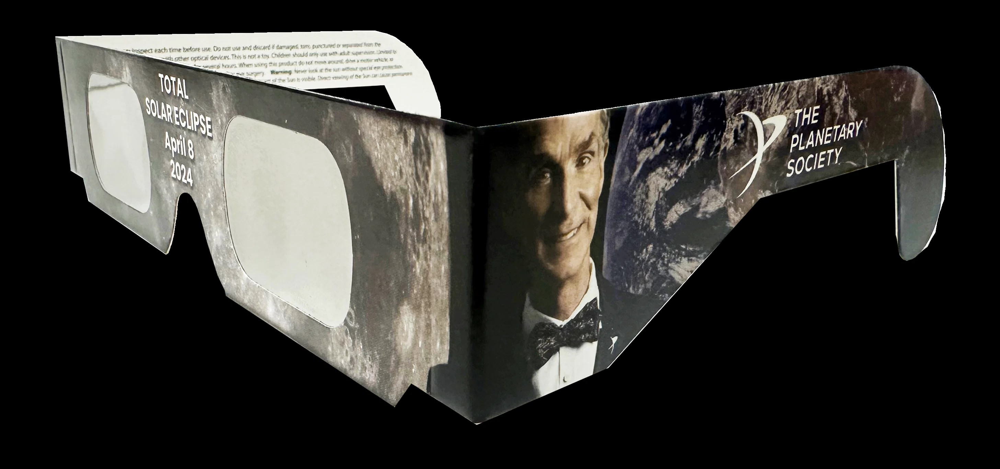
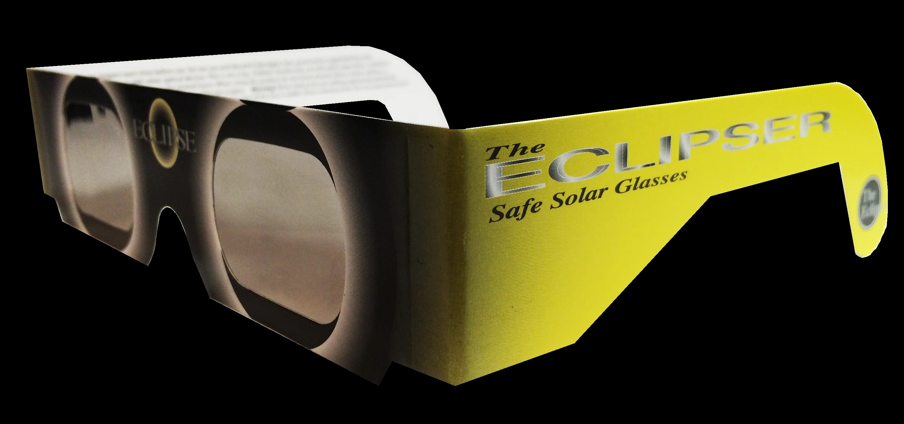
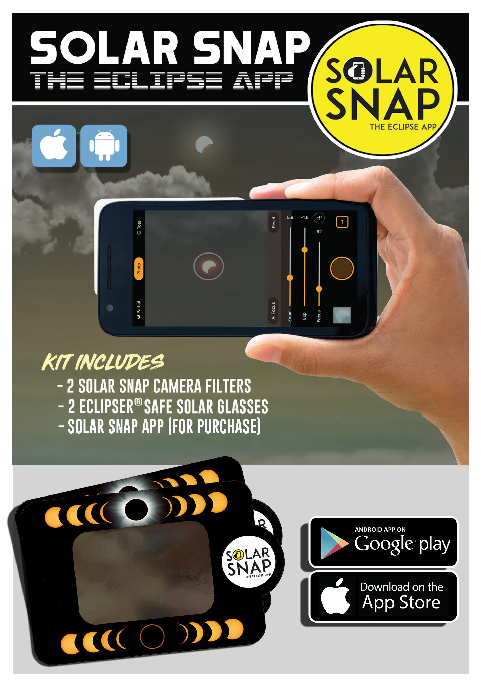
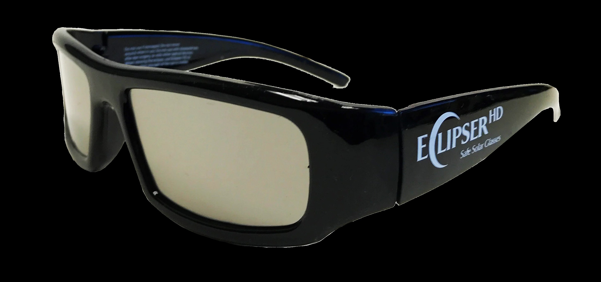
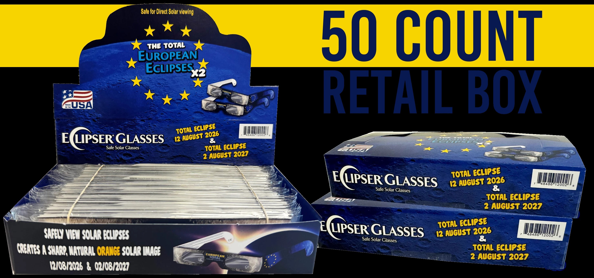
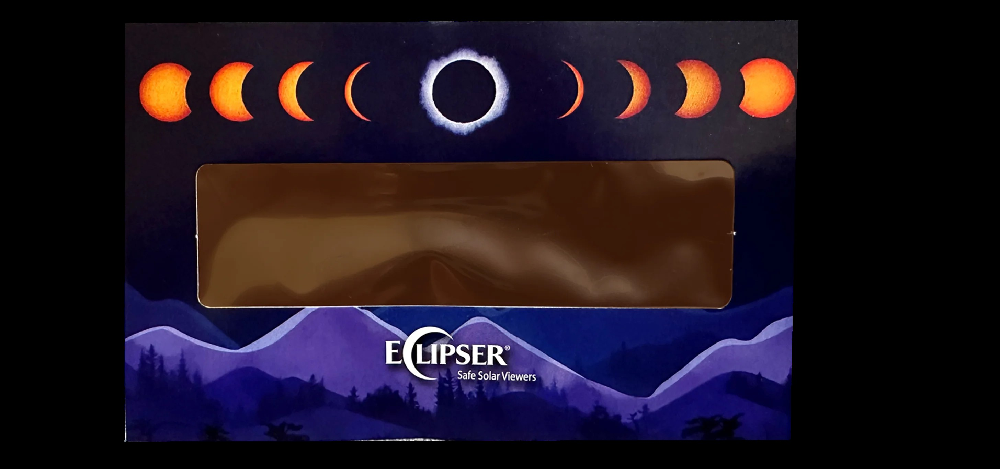

This page contains affiliate links. If you buy through them, The Kuiper Space may earn a small commission at no extra cost to you. Thanks for supporting the site and helping The Kuiper Space stay free!
Every book below is something I've either read myself or simply found intriguing. These links go through Bookshop.org, which splits its profits with independent bookstores instead of sending everything to one large retailer, so buying through these links supports small booksellers, not just this site.
Alien Oceans: The Search for Life in the Depths of Space
by Kevin Peter Hand
Where is the best place to find life beyond Earth? We often look to Mars as the most promising site in our solar system, but recent scientific missions have revealed that some of the most habitable real estate may actually lie farther away. Beneath the frozen crusts of several of the small, ice-covered moons of Jupiter and Saturn lurk vast oceans that may have existed for as long as Earth, and together may contain more than fifty times its total volume of liquid water. Could there be organisms living in their depths? Alien Oceans reveals the science behind the thrilling quest to find out.
My take This fascinating book sheds light onto the possibilities of extraterrestrial life existing outside of the standard Goldilocks zone, on worlds where tidal heating keeps the geology alive and the water liquid.
Fundamental Planetary Science: Updated Edition
by Jack J. Lissauer, Imke de Pater
A quantitative introduction to the Solar System and planetary systems science for advanced undergraduate students, this engaging textbook explains the wide variety of physical, chemical and geological processes that govern the motions and properties of planets.
My take This is the first planetary science textbook I ever used in college, so it has a special place in my heart. I actually looked through about a third of it before the semester even began. It helped solidify my planetary passions.
Gerard P. Kuiper and the Rise of Modern Planetary Science
by Derek W. G. Sears
Astronomer Gerard P. Kuiper ignored the traditional boundaries of his subject. Using telescopes and the laboratory, he made the solar system a familiar, intriguing place. "It is not astronomy," complained his colleagues, and they were right. Kuiper had created a new discipline we now call planetary science.
Accidental Astronomy: How Random Discoveries Shape the Science of Space
by Chris Lintott
A "riveting real-life Hitchhiker's Guide to the Galaxy" (The Telegraph), told "with an engaging voice, a diverting sense of humor, and a humble awe for the wonders of the universe" (Wall Street Journal), shows why so much of astronomy comes down to looking up and lucking out.
The Beginner's Guide to Astrophotography: How to Capture the Cosmos with Any Camera
by Mike Shaw
Now everyone can learn to take great pictures of the cosmos! The night sky is filled with immense beauty and mystery, and it's no wonder so many photographers want to learn how to take great photographs of all it contains: the moon, stars, planets, galaxies, and beyond. But for photographers just getting started photographing the cosmos, some books veer into "advanced" territory way too quickly, filled with difficult theory and long, expensive lists of "must-have" gear.
These come from Eclipse Glasses, made by American Paper Optics — a manufacturer with over 25 years in business. Every pair blocks 100% of harmful UV and infrared light along with 99.999% of intense visible light, which is the actual protection level eclipse viewing requires (ordinary sunglasses are not sufficient).
All products here are ISO 12312-2 certified for safe solar viewing — see the manufacturer's full certification documentation (CE, EN ISO, and ISO certificates for both paper and plastic glasses) before your next eclipse.

Bill Nye Eclipse Glasses (Limited Release)
An official partnership with Bill Nye — the same ISO 12312-2 certified paper-glasses protection, with a limited-run design.
Shop Now
Original ECLIPSER® Glasses
The classic, reliable pick — CE certified and ISO approved paper eclipse glasses, independently tested for safe solar viewing.
Shop Now
Solar Snap Eclipse App Kit
A phone-camera solar filter plus the Solar Snap app, for safely photographing the eclipse with your smartphone — pairs naturally with astrophotography.
Shop Now
Plastic ECLIPSER® HD Glasses
A sturdier, sunglasses-style frame built for repeat use across multiple eclipses, rather than a single-use paper pair.
Shop Now
European Retail Box (50 Glasses)
A bulk box of 50 pairs — ideal for a classroom, school event, or any group viewing where everyone needs their own certified pair.
Shop Now
Eclipse Viewer — Purple Galaxy
A compact handheld viewer with the same ISO 12312-2 certified solar filter, in a viewfinder format instead of glasses — a good alternative if you'd rather not wear frames.
Shop Now